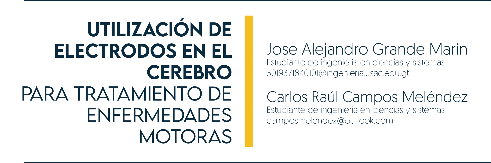

9 Utilización de Electrodos en el Cerebro Para Tratamiento de Enfermedades Motoras.

9.1 Introducción
La combinación de medicina con la tecnología se ha convertido en uno de los avances más significativos para el desarrollo de la humanidad; está logrando sobrepasar métodos médicos manuales, que conforme el tiempo son obsoletos ante la sociedad. Es por eso que la tecnología se a hecho presente haciéndose notar en varias ramas de la medicina, logrando brindarles espacios de realidad virtual o impresiones de partes humanas para poder conocer más a detalle el cuerpo humano, esto sin llegar a la necesidad de tener un cuerpo real u órganos reales para realizar dichas prácticas.
9.2 Artículo
La tecnología neurológica funciona al implantar un microchip al cerebro del ser humano, logrando generar algún tipo de estimulaciones con el simple hecho de centralizar la energía en puntos específicos del cerebro. Lo antes descrito, puede ser posible en un pequeño caso como lo es la manipulación de algún dispositivo tecnológico como lo puede ser un celular, una computadora, etc., logrando manipular dicho dispositivo solo con pensar o enfocar un entrenamiento cerebral para poder hacer esto posible; el objetivo de esta tecnología es brindar terapia al cerebro en caso este haya sufrido algún fallo neurológico.
Actualmente ya existen una serie de empresas enfocadas en crear una interfaz de cerebro computadora, para el análisis de datos y restaurar la comunicación, la movilidad y la independencia de las personas con enfermedades neurológicas, lesiones o pérdida de extremidades.
Una de esas empresas pioneras y que han tenido un gran avance en esta área es BrainGate: Usando una matriz de microelectrodos implantados en el cerebro, nuestra investigación pionera ha demostrado que las señales neuronales asociadas con la intención de mover una extremidad pueden ser “descifradas” por una computadora en tiempo real y utilizadas para operar dispositivos externos. Este sistema de investigación ha permitido a las personas con lesión de la médula espinal, accidente cerebrovascular del tronco encefálico y ALS controlar el cursor de una computadora simplemente pensando en el movimiento de su propia mano paralizada y brazo (Hochberg 2022)
Actualmente se encuentra en desarrollo e investigación, por lo que estos dispositivos no son comerciales ni son de fácil acceso para las personas. El postularse como voluntario para alguna de estas empresas tampoco es una opción ya que se encuentra en un proceso de investigación y el cual ha tenido grandes avances y en un futuro puede ayudar de gran manera en tratamientos cerebrovasculares, motores, de memoria o nerviosos.
En las primeras investigaciones clínicas, la tecnología proporcionó un control intuitivo sobre extremidades protésicas avanzadas y proporcionó a las personas con parálisis un control fácil sobre potentes dispositivos de comunicación y movimiento de asistencia. Un objetivo emocionante es permitir movimientos naturalmente controlados de extremidades paralizadas. Además, estamos desarrollando una nueva generación de neuro tecnologías médicas inalámbricas que podrán registrar y monitorear la actividad neuronal para ayudar en el diagnóstico y manejo de enfermedades neurológicas. (Yong 2021)
“Las neuronas envían y reciben información. Aunque las neuronas vienen en muchos tipos diferentes, generalmente tienen tres partes: una dendrita que recibe una señal, un cuerpo celular llamado soma que calcula la señal y un axón que envía una señal.” (Neuralink 2022) Las neuronas se comunican a través de señales eléctricas: “Los potenciales de acción hacen que las sinapsis liberen neurotransmisores. Estas pequeñas moléculas se unen a los receptores de las dendritas, abriendo canales que hacen que la corriente fluya a través de la membrana de la neurona. Cuando una neurona recibe la combinación ‘correcta’ de entrada sináptica espacio temporal, inicia un potencial de acción.” (Neuralink 2022)
Al colocar electrodos cerca de las neuronas, se pueden identificar potenciales de acción, al registrar muchas neuronas en conjunto permite decodificar la información representadas en esas células.
En las áreas del cerebro relacionadas con el movimiento, por ejemplo, las neuronas representan movimientos previstos. Hay neuronas en el cerebro que transportan información sobre todo lo que vemos, sentimos, tocamos o pensamos.
Se tiene conocimiento de que los músculos y los nervios del cuerpo se activan por medio de corrientes eléctricas, por ejemplo, en una clínica dental se tiene la experiencia de cortar nervios de dientes y al realizar este procedimiento se siente un pequeño toque eléctrico del metal haciendo contacto con el nervio.
La idea es crear dispositivos implantables que permitan a los seres humanos conectar directamente sus cerebros con computadoras y otros dispositivos electrónicos, con el fin de mejorar nuestra capacidad cognitiva y ampliar nuestras habilidades. La compañía ha desarrollado un producto llamado “Link”que consiste en un pequeño chip que se implanta en el cerebro y se conecta a un dispositivo externo a través de hilos finos. (Neuralink, Engineering with the Brain 2022).
La idea es que esta tecnología permita a las personas controlar dispositivos electrónicos con su pensamiento, mejorar la comunicación entre personas y, en última instancia, ayudar a preservar y mejorar el cerebro humano.
9.3 Conclusiones
Avances en la investigación neurocientífica al permitirnos monitorear y manipular directamente el cerebro humano, la tecnología de interfaz cerebro-máquina podría revolucionar la investigación neurocientífica, ayudándonos a comprender mejor el cerebro y a desarrollar tratamientos más efectivos para enfermedades neurológicas
La tecnología de interfaz cerebro-máquina tiene el potencial de mejorar la capacidad cognitiva humana, permitiéndonos acceder a información y realizar tareas más rápida y eficientemente.
9.4 Referencias
- [1] Neuralink. Engineering with the Brain. 7 de Mayo de 2022. https://neuralink.com/applications/ [Último acceso: 02 de febrero de 2023].
- [2] Understanding the Brain. 17 de Diciembre de 2022. https://neuralink.com/science/ [Último acceso: 02 de febrero de 2023].
- [3] Yong, Nicholas Au. «Brain Gate org.» 20 de Abril de 2021. https://www.braingate.org/about-braingate/ [Último acceso: 02 de febrero de 2023].